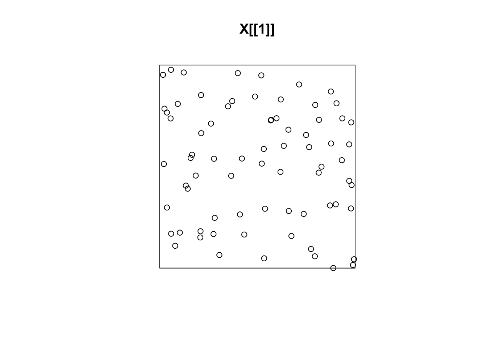
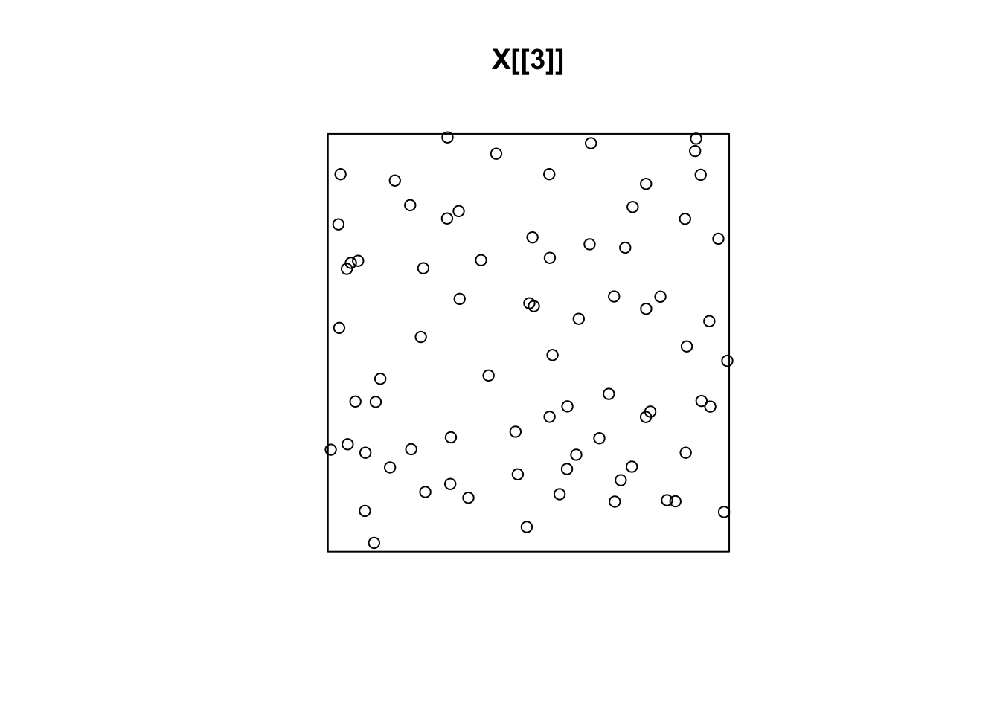
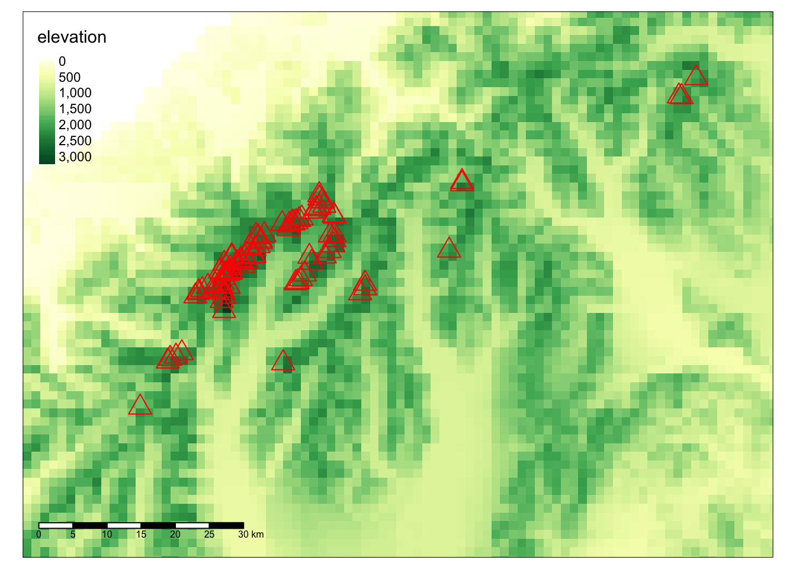
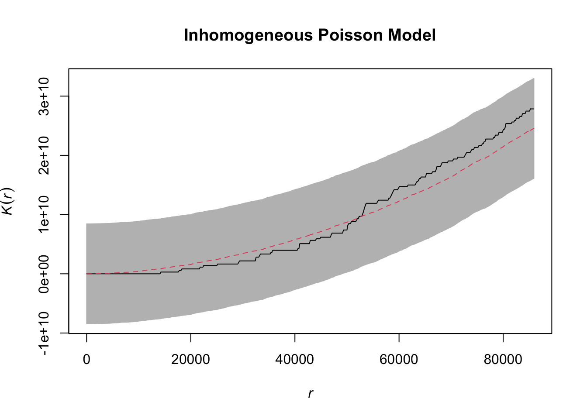

Tuesday November 15, 2022
“Sometimes it pays to stay in bed on Monday, rather than spending the rest of the week debugging Monday’s code.” - Christopher Thompson
Today
- Fitting a log-Gaussian Cox model
- Assessing how well the model fits
- Example from my research on tornadoes
- Spatial logistic regression
0.2 Fitting a log-Gaussian Cox model
Last time you saw how to fit a cluster model using the kppm() function from the {spatstat} family of packages. You fit a Thomas model to the maple trees in the Lansing Woods data.
The Thomas model is a type of Cox model where the logarithm of the spatial intensity is a sample from a non-negative random variable. A limitation is that the samples are spatially independent. Nearby locations might have vastly different spatial intensities.
A log Gaussian Cox process (LGCP) is one where the non-negative random variable is a Gaussian random field (GRF). That is, the log spatial intensity values are spatially correlated. LGCP models are more difficult to fit using conventional methods.
You can fit a Cox model using the method of stochastic partial differential equations (SPDE). This involves a probability (Bayesian) framework that approximates marginal posterior distributions.
To see how this works, here you consider a 1D space.
library(inlabru)## Loading required package: splibrary(INLA)## Loading required package: Matrix## Loading required package: foreach## Loading required package: parallel## This is INLA_22.05.07 built 2022-05-07 10:00:43 UTC.
## - See www.r-inla.org/contact-us for how to get help.
## - To enable PARDISO sparse library; see inla.pardiso()library(mgcv)## Loading required package: nlme## This is mgcv 1.8-40. For overview type 'help("mgcv-package")'.library(ggplot2)Get the data
data(Poisson2_1D)
pts2 |>
dplyr::glimpse()## Rows: 130
## Columns: 1
## $ x <dbl> 25.1064528, 9.1504482, 17.8802463, 28.0073385, 1.8994489, 8.3805420,…The object pts2 is a one column data frame with column name x.
pts2 |>
range()## [1] 0.3293196 51.0375325The values of x range between .33 and 51
Plot the data as points along a line and a histogram. Here you choose about 20 bins across the range of values.
ggplot(data = pts2) +
geom_histogram(mapping = aes(x = x),
binwidth = 55 / 20,
boundary = 0,
fill = NA,
color = "black") +
geom_point(mapping = aes(x = x),
y = 0, pch = "|", cex = 4) 
The histogram is a discrete version of the spatial intensity. It shows that events tend to be most common near the value of 20.
Our goal is a smoothed estimate of the 1-D spatial intensity taking into account clustering.
First create a 1D mesh of 50 points (length.out =) across the range of values (from 0 to 55). The end points of the mesh are not constrained.
x <- seq(0, 55, length.out = 50)
mesh1D <- inla.mesh.1d(loc = x,
boundary = "free")Then specify the spatial correlation with a Matern cluster model. The first argument is the mesh onto which the model will be built.
The argument prior.range = accepts a vector of length two with the first element the lag distance (range) of the spatial correlation and the second element the probability that the range will be less than that value. If the second value is NA, the value of the first element is used as a fixed range.
The argument prior.sigma = accepts a vector of length two with the first element the marginal standard deviation of the spatial intensity and the second element the probability that the standard deviation will be greater than that value.
Here you are non-committal on the range of spatial correlation so you specify a large distance (150) with a 75% chance that it will be less than that. A broad prior range.
Matern <- inla.spde2.pcmatern(mesh = mesh1D,
prior.range = c(150, .75),
prior.sigma = c(.1, .75))## as(<dtCMatrix>, "dgCMatrix") is deprecated since Matrix 1.5-0; do as(., "generalMatrix") insteadNext specify the full model.
f <- x ~ spde1D(x, model = Matern) + Intercept(1)Next you fit the model to the actual event locations in pts2. You use the log Gaussian Cox process lgcp() function from the {inlabru} package. The domain = argument specifies the 1D mesh as a list object.
model.lgcp <- lgcp(components = f,
data = pts2,
domain = list(x = mesh1D))You look at the posterior distributions of the model parameters using the function spde.posterior(). It returns x and y values for a plot of the posterior probability density function (PDF) as a data frame, which you plot with the plot.bru() function (plot() method).
Here is the probability density function for the range parameter.
spde.posterior(result = model.lgcp,
name = "spde1D",
what = "range") |>
plot()
The prior range value was specified quite broadly but the posterior range is focused on values between 2.5 and 5.
Perhaps better viewed on a log scale.
spde.posterior(model.lgcp,
name = "spde1D",
what = "log.range") |>
plot()
Here you plot the probability density function for the Matern correlation component of the model.
spde.posterior(model.lgcp,
name = "spde1D",
what = "matern.correlation") |>
plot()
The black line is the posterior median correlation as a function of lag distance. The maximum correlation of 1 at zero lag distance decays to .5 correlation out at a distance of about 20 units.
You can get a feel for sensitivity to priors by specifying different priors and looking at these posterior plots. Always a good idea when fitting models using Bayesian methods.
For example, change the prior range from 150 to 30 and refit, then compare the probability density function of the Matern correlation.
You can predict on the ‘response’ scale [i.e. the intensity function \(\lambda\)(s)]. First set up a data frame of explanatory values at which to predict (here grid.df). Then use the predict() method.
grid.df <- data.frame(x = seq(0, 55, by = 1))
pred.df <- predict(model.lgcp,
data = grid.df,
formula = ~ exp(spde1D + Intercept))It takes a few seconds.
The output is a data frame containing the locations on the grid (x) and the corresponding summary statistics on the posterior predictions at those location.
pred.df |>
dplyr::glimpse()## Rows: 56
## Columns: 9
## $ x <dbl> 0, 1, 2, 3, 4, 5, 6, 7, 8, 9, 10, 11, 12, 13, 14, 15, …
## $ mean <dbl> 1.921107, 1.967856, 2.043962, 2.135274, 2.234348, 2.34…
## $ sd <dbl> 0.9374101, 0.7401160, 0.6331776, 0.5401297, 0.4532644,…
## $ q0.025 <dbl> 0.8948342, 1.0189518, 1.1877727, 1.3724857, 1.5771321,…
## $ q0.5 <dbl> 1.701059, 1.800168, 1.895023, 2.027208, 2.188462, 2.28…
## $ q0.975 <dbl> 4.407098, 3.727074, 3.519524, 3.488390, 3.351370, 3.26…
## $ median <dbl> 1.701059, 1.800168, 1.895023, 2.027208, 2.188462, 2.28…
## $ mean.mc_std_err <dbl> 0.09374101, 0.07401160, 0.06331776, 0.05401297, 0.0453…
## $ sd.mc_std_err <dbl> 0.11741556, 0.07849490, 0.06781651, 0.05277743, 0.0407…You pass this data frame to the plot() method to produce the following prediction plot.
plot(pred.df, color = "red") +
geom_point(data = pts2,
mapping = aes(x = x),
y = 0, pch = "|", cex = 2) +
xlab("x") + ylab("Spatial intensity")
The LGCP model provides a smoothed spatial intensity of the events and a 95% credible interval about the intensity at each grid location.
How does this compare with the intensity function that generated the data?
The function lambda2_1D( )in the dataset Poission2_1D calculates the true intensity that was used in simulating these data.
To plot this, you make a data frame with x- and y-coordinates giving the true intensity function, \(\lambda\)(s). Use a lot of x-values to get a nice smooth plot (150 values).
xs <- seq(0, 55, length = 150)
true.lambda <- data.frame(x = xs,
y = lambda2_1D(xs))Now plot the fitted (from the LGCP model) and the true intensity functions.
plot(pred.df, color = "red") +
geom_point(data = pts2,
mapping = aes(x = x),
y = 0, pch = "|", cex = 2) +
geom_line(data = true.lambda,
mapping = aes(x, y)) +
xlab("x") + ylab("Spatial intensity")
You can look at the goodness-of-fit of the model using the function bincount( ), which plots the 95% credible intervals in a specified set of bins along the x-axis together with the observed count in each bin.
bc <- bincount(
result = model.lgcp,
observations = pts2,
breaks = seq(0, max(pts2), length = 12),
predictor = x ~ exp(spde1D + Intercept)
)
attributes(bc)$ggp
The credible intervals are shown as red rectangles, the mean fitted value as a short horizontal blue line, and the observed data as black points.
Abundance is the integral of the intensity over space. You estimate it by integrating the predicted intensity over x.
Integration is done by a weighted sum of the intensities.
The locations x and their weights are constructed using the ipoints() function.
Here you create 50 equally-space integration points cover the 1D range. The weights are all the same (55/100).
ips <- ipoints(c(0, 55), 100, name = "x")
head(ips)## x weight group
## 1 0.275 0.55 1
## 2 0.825 0.55 1
## 3 1.375 0.55 1
## 4 1.925 0.55 1
## 5 2.475 0.55 1
## 6 3.025 0.55 1Then compute the abundance over the entire domain with the predict() method.
( Lambda <- predict(model.lgcp,
ips,
~ sum(weight * exp(spde1D + Intercept))) )## mean sd q0.025 q0.5 q0.975 median mean.mc_std_err
## 1 129.7847 10.34895 110.3926 129.8629 153.7783 129.8629 1.034895
## sd.mc_std_err
## 1 0.7929944meanis the posterior mean abundancesdis the estimated standard error of the posterior of the abundanceq0.025andq0.975are the 95% credible interval boundsq0.5is the posterior median abundance
The above posterior values for the abundance takes into account only the variance due to the parameters of the intensity function. It neglects the variance in the number of events, given the intensity function.
To include this you need to modify the input to the predict( ) method. You include a data frame that samples from a Poisson density for each value of the abundance (here N = 50:250).
Nest <- predict(model.lgcp,
ips,
~ data.frame(N = 50:250,
dpois = dpois(50:250,
lambda = sum(weight * exp(spde1D + Intercept)))))The result is the same statistics as were calculated for Lambda, but here for every abundance value between 50 and 250, rather than for the posterior mean abundance alone.
Nest |>
dplyr::glimpse()## Rows: 201
## Columns: 9
## $ N <dbl> 50, 51, 52, 53, 54, 55, 56, 57, 58, 59, 60, 61, 62, 63…
## $ mean <dbl> 7.817213e-12, 1.651472e-11, 3.423363e-11, 6.965730e-11…
## $ sd <dbl> 4.979422e-11, 1.041234e-10, 2.135674e-10, 4.298351e-10…
## $ q0.025 <dbl> 7.317116e-22, 2.155683e-21, 6.228954e-21, 1.766004e-20…
## $ q0.5 <dbl> 1.451814e-16, 3.763544e-16, 9.568641e-16, 2.386884e-15…
## $ q0.975 <dbl> 6.009402e-11, 1.292125e-10, 2.725134e-10, 5.639532e-10…
## $ median <dbl> 1.451814e-16, 3.763544e-16, 9.568641e-16, 2.386884e-15…
## $ mean.mc_std_err <dbl> 4.979422e-12, 1.041234e-11, 2.135674e-11, 4.298351e-11…
## $ sd.mc_std_err <dbl> 2.147275e-11, 4.464829e-11, 9.104312e-11, 1.821269e-10…You compute the 95% prediction interval and the median with the inla.qmarginal() function.
inla.qmarginal(c(.025, .5, .975),
marginal = list(x = Nest$N,
y = Nest$mean))## [1] 100.9000 130.2834 162.4960Now compare Lambda to Nest using a plot.
First calculate the posterior conditional on the mean of Lambda.
Nest$plugin_estimate <- dpois(Nest$N,
lambda = Lambda$mean)Then plot it and the unconditional posterior.
ggplot(data = Nest) +
geom_line(aes(x = N,
y = mean,
color = "Posterior")) +
geom_line(aes(x = N,
y = plugin_estimate,
color = "Plugin"))
Can you explain the difference?
Spatial distribution of gorilla nests using SPDE https://inlabru-org.github.io/inlabru/index.html
More info https://inlabru-org.github.io/inlabru/articles/web/1d_lgcp.html
Assessing how well the model fits
A model should be capable of generating fake data that are statistically indistinguishable from the real data. If your model is a point pattern model you produce samples of event locations with the simulate() function.
Let’s return to the Swedish pine sapling data and the inhibition model that you fit last time.
You assume a (stationary) Strauss process with interaction radius r. The parameters \(\beta\) and \(\gamma\) define the pairwise interaction in which each event contributes a factor \(\beta\) to the probability density of the point pattern, and each pair of events closer than r units apart contributes a factor \(\gamma\) to the density where \(\gamma\) is less than one.
You use the ppm() function and include the point pattern data as the first argument. You set the trend term to a constant (implying a stationary process) with the argument trend ~ 1 and the interaction radius to 10 units with the argument interaction = Strauss(r = 10) and a border correction out to a distance of 10 units from the window with the rbord = argument.
library(spatstat)## Loading required package: spatstat.data## Loading required package: spatstat.geom## spatstat.geom 2.4-0##
## Attaching package: 'spatstat.geom'## The following object is masked from 'package:inlabru':
##
## vertices## Loading required package: spatstat.random## spatstat.random 2.2-0## Loading required package: spatstat.core## Loading required package: rpart## spatstat.core 2.4-4## Loading required package: spatstat.linnet## spatstat.linnet 2.3-2##
## spatstat 2.3-4 (nickname: 'Watch this space')
## For an introduction to spatstat, type 'beginner'SP <- swedishpines
model.in <- SP |>
ppm(trend = ~ 1,
interaction = Strauss(r = 10),
rbord = 10)Here you generate three samples of the Swedish pine sapling data and for comparison plot them alongside the actual data.
X <- model.in |>
simulate(nsim = 3)## Generating 3 simulated patterns ...1, 2, 3.plot(SP) 
plot(X[[1]])
plot(X[[2]])
plot(X[[3]])
The samples of point pattern data look similar to the actual data providing evidence that the inhibition model is adequate.
To quantitatively assess the similarity you can use the envelope() function to compute the \(K\) function on 99 samples and on the actual data.
The \(K\) function values are averaged over all samples and a mean line represents the mean model curve. Uncertainty is assessed with a band that ranges from the minimum to the maximum K at each distance.
Do this with the inhibition model for the pine saplings. This takes a few seconds to complete.
model.in |>
envelope(fun = Kest,
nsim = 99,
correction = 'border') |>
plot(legend = FALSE)## Generating 99 simulated realisations of fitted Gibbs model ...
## 1, 2, 3, 4, 5, 6, 7, 8, 9, 10, 11, 12, 13, 14, 15, 16, 17, 18, 19, 20, 21, 22, 23, 24, 25, 26, 27, 28, 29, 30, 31, 32, 33, 34, 35, 36, 37, 38, 39, 40,
## 41, 42, 43, 44, 45, 46, 47, 48, 49, 50, 51, 52, 53, 54, 55, 56, 57, 58, 59, 60, 61, 62, 63, 64, 65, 66, 67, 68, 69, 70, 71, 72, 73, 74, 75, 76, 77, 78, 79, 80,
## 81, 82, 83, 84, 85, 86, 87, 88, 89, 90, 91, 92, 93, 94, 95, 96, 97, 98, 99.
##
## Done.
The black line is the empirical (data) curve and the red line is the average over the 99 samples. The two lines are close and the black line falls nearly completely within the gray uncertainty band indicating the model fits the data well. The kink in the red curve is the result of specifying 10 units for the interaction distance.
From this plot you confidently conclude that a homogeneous inhibition model is adequate for describing the pine sapling data.
What about the cluster model for the maple trees? You used a Thomas cluster process which means that centered on each event the chance of a nearby event decays as a two-dimensional Gaussian distribution. The latent rate of a nearby event is a two-dimensional kernel.
This differs from a Matern cluster process which means that centered on each event there is an equal chance of a nearby event out to some distance r.
Use use the kppm() function and include the point pattern data as the first argument. You assume stationarity so trend = 1 and the argument clusters = is set to "Thomas".
MT <- lansing |>
subset(marks == "maple") |>
unmark()
( model.cl <- MT |>
kppm(trend = ~ 1,
clusters = "Thomas") )## Stationary cluster point process model
## Fitted to point pattern dataset 'MT'
## Fitted by minimum contrast
## Summary statistic: K-function
##
## Uniform intensity: 514
##
## Cluster model: Thomas process
## Fitted cluster parameters:
## kappa scale
## 21.74344366 0.06752959
## Mean cluster size: 23.63931 pointsNow plot the \(K\) function on the data and on 99 model simulations.
plot(envelope(model.cl,
fun = Kest,
nsim = 99,
correction = 'border'), legend = FALSE)## Generating 99 simulated realisations of fitted cluster model ...
## 1, 2, 3, 4, 5, 6, 7, 8, 9, 10, 11, 12, 13, 14, 15, 16, 17, 18, 19, 20, 21, 22, 23, 24, 25, 26, 27, 28, 29, 30, 31, 32, 33, 34, 35, 36, 37, 38, 39, 40,
## 41, 42, 43, 44, 45, 46, 47, 48, 49, 50, 51, 52, 53, 54, 55, 56, 57, 58, 59, 60, 61, 62, 63, 64, 65, 66, 67, 68, 69, 70, 71, 72, 73, 74, 75, 76, 77, 78, 79, 80,
## 81, 82, 83, 84, 85, 86, 87, 88, 89, 90, 91, 92, 93, 94, 95, 96, 97, 98, 99.
##
## Done.
In the case of the maple trees, a cluster model is adequate.
However, it might not be satisfying since you know about the potential for inhibition caused by the presence of hickory trees.
Also there were more trees in the south than in the north so the stationary assumption is suspect.
You fit a second cluster model where the intensity is a linear function of distance in the north-south direction.
model.cl2 <- MT |>
kppm(trend = ~ y,
clusters = "Thomas")
model.cl2## Inhomogeneous cluster point process model
## Fitted to point pattern dataset 'MT'
## Fitted by minimum contrast
## Summary statistic: inhomogeneous K-function
##
## Log intensity: ~y
##
## Fitted trend coefficients:
## (Intercept) y
## 6.894933 -1.486252
##
## Cluster model: Thomas process
## Fitted cluster parameters:
## kappa scale
## 26.955877 0.053585
## Mean cluster size: [pixel image]This is an inhomogeneous cluster point process model. The logarithm of the intensity depends on y (Log intensity: ~y). The fitted trend coefficient is negative as expected, since there are fewer trees as you move north (increasing y direction). There is one spatial unit in the north-south direction so you interpret this coefficient to mean there are 77% fewer trees in the north than in the south. The 77% comes from the formula 1 - exp(-1.486) = .77.
The average number of clusters (kappa) is higher at about 27 (it was 22 with the stationary model). The cluster scale parameter (sigma), indicating the characteristic size of the cluster (in distance units) is lower at .0536. That makes sense since some of the event-to-event distances are accounted for by the trend term.
Simulate data using the new model and compare the inhomogenous \(K\) function between the simulations and the observed data.
model.cl2 |>
envelope(fun = Kinhom,
nsim = 99,
correction = 'border') |>
plot(legend = FALSE)## Generating 99 simulated realisations of fitted cluster model ...
## 1, 2, 3, 4, 5, 6, 7, 8, 9, 10, 11, 12, 13, 14, 15, 16, 17, 18, 19, 20, 21, 22, 23, 24, 25, 26, 27, 28, 29, 30, 31, 32, 33, 34, 35, 36, 37, 38, 39, 40,
## 41, 42, 43, 44, 45, 46, 47, 48, 49, 50, 51, 52, 53, 54, 55, 56, 57, 58, 59, 60, 61, 62, 63, 64, 65, 66, 67, 68, 69, 70, 71, 72, 73, 74, 75, 76, 77, 78, 79, 80,
## 81, 82, 83, 84, 85, 86, 87, 88, 89, 90, 91, 92, 93, 94, 95, 96, 97, 98, 99.
##
## Done.
The black line falls within the gray band and the gray band is narrower than the simulations using the homogeneous cluster model.
If the intensity of events depends on spatial location as it does with the maple trees you can include a trend and covariate term in the model.
For a trend term, the formula ~ x corresponds to a spatial trend of the form \(\lambda(x) = \exp(a + bx)\), while ~ x + y corresponds to \(\lambda(x, y) = \exp(a + bx + cy)\) where x, y are the spatial coordinates. For a covariates, the formula is ~ covariate1 + covariate2.
Consider the bei data from the {spatstat} package containing the locations of 3605 trees in a tropical rain forest.
bei |>
plot()
Accompanied by covariate data giving the elevation (altitude) and slope of elevation in the study region. The data bei.extra is a list containing two pixel images, elev (elevation in meters) and grad (norm of elevation gradient). These pixel images are objects of class im, see im.object.
bei.extra |>
image()
Compute and plot the \(L\) function on the ppp object bei.
bei |>
envelope(fun = Lest,
nsim = 39,
global = TRUE,
correction = "border") |>
plot(legend = FALSE)## Generating 39 simulations of CSR ...
## 1, 2, 3, 4, 5, 6, 7, 8, 9, 10, 11, 12, 13, 14, 15, 16, 17, 18, 19, 20, 21, 22, 23, 24, 25, 26, 27, 28, 29, 30, 31, 32, 33, 34, 35, 36, 37, 38, 39.
##
## Done.
There is significant clustering indicated by the black line sitting far above the CSR line. There are more trees in the vicinity of other trees than expected by chance.
But how much of the clustering is due to variations in terrain?
You start by fitting a model that includes elevation and gradient as covariates without clustering. This is done with the trend = argument naming the image variables and including the argument covariates = indicating a data frame or, in this case, a list whose entries are image functions.
model.ppm1 <- bei |>
ppm(trend = ~ elev + grad,
covariates = bei.extra)Check to see if elevation and gradient as explanatory variables are significant in the model.
model.ppm1 |>
summary()## Point process model
## Fitting method: maximum likelihood (Berman-Turner approximation)
## Model was fitted using glm()
## Algorithm converged
## Call:
## ppm.ppp(Q = bei, trend = ~elev + grad, covariates = bei.extra)
## Edge correction: "border"
## [border correction distance r = 0 ]
## --------------------------------------------------------------------------------
## Quadrature scheme (Berman-Turner) = data + dummy + weights
##
## Data pattern:
## Planar point pattern: 3604 points
## Average intensity 0.00721 points per square metre
## Window: rectangle = [0, 1000] x [0, 500] metres
## Window area = 5e+05 square metres
## Unit of length: 1 metre
##
## Dummy quadrature points:
## 130 x 130 grid of dummy points, plus 4 corner points
## dummy spacing: 7.692308 x 3.846154 metres
##
## Original dummy parameters: =
## Planar point pattern: 16904 points
## Average intensity 0.0338 points per square metre
## Window: rectangle = [0, 1000] x [0, 500] metres
## Window area = 5e+05 square metres
## Unit of length: 1 metre
## Quadrature weights:
## (counting weights based on 130 x 130 array of rectangular tiles)
## All weights:
## range: [1.64, 29.6] total: 5e+05
## Weights on data points:
## range: [1.64, 14.8] total: 41000
## Weights on dummy points:
## range: [1.64, 29.6] total: 459000
## --------------------------------------------------------------------------------
## FITTED MODEL:
##
## Nonstationary Poisson process
##
## ---- Intensity: ----
##
## Log intensity: ~elev + grad
## Model depends on external covariates 'elev' and 'grad'
## Covariates provided:
## elev: im
## grad: im
##
## Fitted trend coefficients:
## (Intercept) elev grad
## -8.56355220 0.02143995 5.84646680
##
## Estimate S.E. CI95.lo CI95.hi Ztest Zval
## (Intercept) -8.56355220 0.341113849 -9.23212306 -7.89498134 *** -25.104675
## elev 0.02143995 0.002287866 0.01695581 0.02592408 *** 9.371155
## grad 5.84646680 0.255781018 5.34514522 6.34778838 *** 22.857313
##
## ----------- gory details -----
##
## Fitted regular parameters (theta):
## (Intercept) elev grad
## -8.56355220 0.02143995 5.84646680
##
## Fitted exp(theta):
## (Intercept) elev grad
## 1.909398e-04 1.021671e+00 3.460097e+02The output shows that both elevation and elevation gradient are significant in explaining the spatial varying intensity of the trees.
Since the conditional intensity is on a log scale you interpret the elevation coefficient as follows: For a one meter increase in elevation the local spatial intensity increases by a amount equal to exp(.021) or 2%.
Check how well the model fits the data. Again this is done with the envelope() function using the model object as the first argument.
E <- model.ppm1 |>
envelope(fun = Lest,
nsim = 39,
correction = "border",
global = TRUE)## Generating 78 simulated realisations of fitted Poisson model (39 to estimate
## the mean and 39 to calculate envelopes) ...
## 1, 2, 3, 4, 5, 6, 7, 8, 9, 10, 11, 12, 13, 14, 15, 16, 17, 18, 19, 20, 21, 22, 23, 24, 25, 26, 27, 28, 29, 30, 31, 32, 33, 34, 35, 36, 37, 38, 39, 40,
## 41, 42, 43, 44, 45, 46, 47, 48, 49, 50, 51, 52, 53, 54, 55, 56, 57, 58, 59, 60, 61, 62, 63, 64, 65, 66, 67, 68, 69, 70, 71, 72, 73, 74, 75, 76, 77, 78.
##
## Done.E |>
plot(main = "Inhomogeneous Poisson Model",
legend = FALSE)
You conclude that although elevation and elevation slope are significant in explaining the spatial distribution of trees, they do not explain all the clustering.
An improvement is made by adding a cluster process to the model. This is done with the function kppm().
model.ppm2 <- bei |>
kppm(trend = ~ elev + grad,
covariates = bei.extra,
clusters = "Thomas")
E <- model.ppm2 |>
envelope(Lest,
nsim = 39,
global = TRUE,
correction = "border")## Generating 78 simulated realisations of fitted cluster model (39 to estimate
## the mean and 39 to calculate envelopes) ...
## 1, 2, 3, 4, 5, 6, 7, 8, 9, 10, 11, 12, 13, 14, 15, 16, 17, 18, 19, 20, 21, 22, 23, 24, 25, 26, 27, 28, 29, 30, 31, 32, 33, 34, 35, 36, 37, 38, 39, 40,
## 41, 42, 43, 44, 45, 46, 47, 48, 49, 50, 51, 52, 53, 54, 55, 56, 57, 58, 59, 60, 61, 62, 63, 64, 65, 66, 67, 68, 69, 70, 71, 72, 73, 74, 75, 76, 77, 78.
##
## Done.E |>
plot(main = "Clustered Inhomogeneous Model",
legend = FALSE)
The uncertainty band is much wider. The empirical curve fits inside the band so you conclude that an inhomogeneous cluster process appears to be an adequate description of the point pattern data.
0.3 Example from my research on tornadoes
The vast majority of tornadoes have winds of less than 60 m/s (120 mph). Violent tornadoes, with winds exceeding 90 m/s, are rare. Most of these potentially destructive and deadly tornadoes occur from rotating thunderstorms called supercells, with formation contingent on local (storm-scale) meteorological conditions.
The long-term risk of a tornado at a given location is assessed using historical records, however, the rarity of the most violent tornadoes make these rate estimates unstable. Here you use the more stable rate estimates from the larger set of less violent tornadoes to create more reliable estimates of violent tornado frequency.
For this exercise attention is restricted to tornadoes occurring in Kansas over the period 1954–2020.
Torn.sf <- sf::st_read(dsn = here::here("data", "1950-2020-torn-initpoint")) |>
sf::st_transform(crs = 3082) |>
dplyr::filter(mag >= 0, yr >= 1954) |>
dplyr::mutate(EF = mag,
EFf = as.factor(EF)) |>
dplyr::select(yr, EF, EFf)## Reading layer `1950-2020-torn-initpoint' from data source
## `/Users/jameselsner/Desktop/ClassNotes/ASS-2022/data/1950-2020-torn-initpoint'
## using driver `ESRI Shapefile'
## Simple feature collection with 66244 features and 22 fields
## Geometry type: POINT
## Dimension: XY
## Bounding box: xmin: -163.53 ymin: 17.7212 xmax: -64.7151 ymax: 61.02
## Geodetic CRS: WGS 84W.sfc <- USAboundaries::us_states(states = "Kansas") |>
sf::st_transform(crs = sf::st_crs(Torn.sf)) |>
sf::st_geometry()
Torn.sf <- Torn.sf[W.sfc, ]Create a owin and ppp objects. Note that although you already subset by Kansas tornadoes above you need to subset on the ppp object to assign the KS boundary as the analysis window.
KS.win <- W.sfc |>
as.owin()
T.ppp <- Torn.sf["EF"] |>
as.ppp()
T.ppp <- T.ppp[KS.win]
summary(T.ppp)## Marked planar point pattern: 4139 points
## Average intensity 1.918005e-08 points per square unit
##
## *Pattern contains duplicated points*
##
## Coordinates are given to 1 decimal place
## i.e. rounded to the nearest multiple of 0.1 units
##
## marks are numeric, of type 'double'
## Summary:
## Min. 1st Qu. Median Mean 3rd Qu. Max.
## 0.0000 0.0000 0.0000 0.6139 1.0000 5.0000
##
## Window: polygonal boundary
## single connected closed polygon with 169 vertices
## enclosing rectangle: [1317675.9, 1980294.8] x [7114969, 7458570] units
## (662600 x 343600 units)
## Window area = 2.15797e+11 square units
## Fraction of frame area: 0.948There are 4139 tornadoes over the period with an average intensity of 192 per 100 square kilometer (multiply the average intensity in square meters by 10^10).
Separate the point pattern data into non-violent tornadoes and violent tornadoes. The non-violent tornadoes include those with an EF rating of 0, 1, 2 or 3. The violent tornadoes include those with an EF rating of 4 or 5.
NV.ppp <- T.ppp |>
subset(marks <= 3 & marks >= 0) |>
unmark()
summary(NV.ppp)## Planar point pattern: 4098 points
## Average intensity 1.899006e-08 points per square unit
##
## *Pattern contains duplicated points*
##
## Coordinates are given to 1 decimal place
## i.e. rounded to the nearest multiple of 0.1 units
##
## Window: polygonal boundary
## single connected closed polygon with 169 vertices
## enclosing rectangle: [1317675.9, 1980294.8] x [7114969, 7458570] units
## (662600 x 343600 units)
## Window area = 2.15797e+11 square units
## Fraction of frame area: 0.948V.ppp <- T.ppp |>
subset(marks >= 4) |>
unmark()
V.ppp |>
summary()## Planar point pattern: 41 points
## Average intensity 1.899933e-10 points per square unit
##
## Coordinates are given to 1 decimal place
## i.e. rounded to the nearest multiple of 0.1 units
##
## Window: polygonal boundary
## single connected closed polygon with 169 vertices
## enclosing rectangle: [1317675.9, 1980294.8] x [7114969, 7458570] units
## (662600 x 343600 units)
## Window area = 2.15797e+11 square units
## Fraction of frame area: 0.948The spatial intensity of the non-violent tornadoes is 190 per 100 sq km. The spatial intensity of the violent tornadoes is 1.9 per 100 square kilometer.
Plot the locations of the violent tornado events.
V.ppp |>
plot()
Early we found that the spatial intensity of tornado reports was a function of distance to nearest city with fewer reports in rural areas.
So here you include this as an explanatory variable. Import the data, set the CRS, and transform the CRS to match that of the tornadoes. Exclude cities with fewer than 1000 people.
C.sf <- USAboundaries::us_cities() |>
dplyr::filter(population >= 1000) |>
sf::st_transform(crs = sf::st_crs(Torn.sf))## City populations for contemporary data come from the 2010 census.Then convert the simple feature data frame to a ppp object. Then subset the events by the analysis window (Kansas border).
C.ppp <- C.sf |>
as.ppp()## Warning in as.ppp.sf(C.sf): only first attribute column is used for marksC.ppp <- C.ppp[KS.win] |>
unmark()
C.ppp |>
plot()
Next create a distance map of the city locations using the distmap() function.
Zc <- C.ppp |>
distmap()
Zc |>
plot()
The pixel values of the im object are distances is meters. Blue indicates locations that are less than 20 km from a city.
Interest lies with the distance to nearest non-violent tornado. You check to see if this might be a useful variable in a model so you make a distance map for the non-violent events and then use the rhohat() function.
Znv <- NV.ppp |>
distmap()
rhat <- rhohat(V.ppp, Znv,
adjust = 1.5,
smoother = "kernel",
method = "transform")
dist <- rhat$Znv
rho <- rhat$rho
hi <- rhat$hi
lo <- rhat$lo
Rho.df <- data.frame(dist = dist, rho = rho, hi = hi, lo = lo)
ggplot(data = Rho.df) +
geom_ribbon(mapping = aes(x = dist,
ymin = lo,
ymax = hi),
alpha = .3) +
geom_line(aes(x = dist, y = rho), col = "black") +
ylab("Spatial intensity of violent tornadoes") +
xlab("Distance from nearest non-violent tornado (m)") +
theme_minimal()
This shows that regions that get non-violent tornadoes also see higher rates of violent tornadoes.
So the model should include two covariates (trend terms), distance to nearest city and distance to nearest non-violent tornado.
model.ppm1 <- V.ppp |>
ppm(trend = ~ Zc + Znv,
covariates = list(Zc = Zc, Znv = Znv))
model.ppm1 |>
summary() |>
coef()## Estimate S.E. CI95.lo CI95.hi Ztest
## (Intercept) -2.079665e+01 3.689920e-01 -2.151986e+01 -2.007344e+01 ***
## Zc -3.213231e-05 1.118327e-05 -5.405111e-05 -1.021350e-05 **
## Znv -2.235788e-04 8.585891e-05 -3.918592e-04 -5.529845e-05 **
## Zval
## (Intercept) -56.360705
## Zc -2.873248
## Znv -2.604026As expected the model shows fewer violent tornadoes with increasing distance from the nearest city (negative coefficient on Zc) and fewer violent tornadoes with increasing distance from a non-violent tornado (negative coefficient on Znv).
Since the spatial unit is meters the coefficient of -3.06e-05 is interpreted as a [1 - exp(-.0306)] * 100% or 3% decrease in violent tornado reports per kilometer of distance from a city. Similarly the coefficient on distance from nearest non-violent tornado is interpreted as a 23% decrease in violent tornado reports per kilometer of distance from nearest non-violent tornado.
Check if there is any residual nearest neighbor correlation.
E <- model.ppm1 |>
envelope(fun = Kest,
nsim = 39,
global = TRUE)## Generating 78 simulated realisations of fitted Poisson model (39 to estimate
## the mean and 39 to calculate envelopes) ...
## 1, 2, 3, 4, 5, 6, 7, 8, 9, 10, 11, 12, 13, 14, 15, 16, 17, 18, 19, 20, 21, 22, 23, 24, 25, 26, 27, 28, 29, 30, 31, 32, 33, 34, 35, 36, 37, 38, 39, 40,
## 41, 42, 43, 44, 45, 46, 47, 48, 49, 50, 51, 52, 53, 54, 55, 56, 57, 58, 59, 60, 61, 62, 63, 64, 65, 66, 67, 68, 69, 70, 71, 72, 73, 74, 75, 76, 77, 78.
##
## Done.E |>
plot(main = "Inhomogeneous Poisson Model",
legend = FALSE)
There appears to be a bit of regularity at smaller scales. The empirical curve (black line) falls slightly below the model (dashed red line). There are fewer nearby violent tornadoes than one would expect.
To see if this is statistically significant, you add an inhibition process to the model.
model.ppm2 <- V.ppp |>
ppm(trend = ~ Zc + Znv,
covariates = list(Zc = Zc, Znv = Znv),
interaction = Strauss(r = 40000))
model.ppm2 |>
summary() |>
coef()## Estimate S.E. CI95.lo CI95.hi Ztest
## (Intercept) -1.999626e+01 0.6389281922 -2.124853e+01 -1.874398e+01 ***
## Zc -4.125674e-05 0.0000129859 -6.670864e-05 -1.580484e-05 **
## Znv -2.325491e-04 0.0001163074 -4.605075e-04 -4.590757e-06 *
## Interaction -6.232454e-01 0.3926001130 -1.392727e+00 1.462367e-01
## Zval
## (Intercept) -31.296564
## Zc -3.177041
## Znv -1.999435
## Interaction -1.587481The interaction coefficient has a negative sign as expected from the above plot, but the standard error is relatively large so it is not statistically significant.
Remove the inhibition process and add a trend term in the east-west direction.
model.ppm3 <- V.ppp |>
ppm(trend = ~ Zc + Znv + x,
covariates = list(Zc = Zc, Znv = Znv))
model.ppm3 |>
summary() |>
coef()## Estimate S.E. CI95.lo CI95.hi Ztest
## (Intercept) -2.381531e+01 1.891801e+00 -2.752317e+01 -2.010745e+01 ***
## Zc -2.274246e-05 1.255697e-05 -4.735366e-05 1.868739e-06
## Znv -2.379710e-04 8.651254e-05 -4.075324e-04 -6.840952e-05 **
## x 1.681064e-06 1.020308e-06 -3.187026e-07 3.680830e-06
## Zval
## (Intercept) -12.588694
## Zc -1.811143
## Znv -2.750711
## x 1.647605There is a significant eastward trend but it appears to confound the distance to city term because the Zc term is no longer significant. Why is this?
Settle on the first model and generate simulated data from it.
model.ppm1 |>
simulate(nsim = 6) |>
plot()## Generating 6 simulated patterns ...1, 2, 3, 4, 5, 6.
plot(V.ppp)
The model appears to due a good job simulating data that looks like the actual data.
Spatial logistic regression
Spatial logistic regression is a popular model for point pattern data. The study domain is divided into a grid of cells; each cell is assigned the value one if it contains at least one event, and zero otherwise.
Then a logistic regression models the presence probability \(p = P(Y = 1)\) as a function of explanatory variables \(X\) in the (matrix) form
\[ \log \frac{p}{1-p} = \beta X \] where the left-hand side is the logit (log of the odds ratio) and the \(\beta\) are the coefficients to be determined.
If your data are stored as ppp objects, a spatial logistic model can be fit directly using functions from the {spatstat} package.
Let’s look at an example from the package (a good strategy in general when learning a new technique).
Consider the locations of 57 copper ore deposits (events) and 146 line segments representing geological ‘lineaments.’ Lineaments are linear features that consist of geological faults.
It is of interest to be able to predict the probability of a copper ore from the lineament pattern. The data are stored as a list in copper. The list contains a ppp object for the ore deposits and a psp object for the lineaments.
data(copper)
plot(copper$SouthPoints)
plot(copper$SouthLines, add = TRUE)
For convenience you first rotate the events (points and lines) by 90 degrees in the anticlockwise direction and save them as separate objects.
C <- rotate(copper$SouthPoints, pi/2)
L <- rotate(copper$SouthLines, pi/2)
C |>
plot()
L |>
plot(add = TRUE)
You summarize the planar point pattern data object C.
C |>
summary()## Planar point pattern: 57 points
## Average intensity 0.01020691 points per square km
##
## Coordinates are given to 2 decimal places
## i.e. rounded to the nearest multiple of 0.01 km
##
## Window: rectangle = [-158.233, -0.19] x [-0.335, 35] km
## (158 x 35.34 km)
## Window area = 5584.45 square km
## Unit of length: 1 kmThere are 57 ore deposits over a region of size 5584 square km resulting in an intensity of about .01 ore deposits per square km.
Next you create a distance map of the lineaments to be used as a covariate.
D <- L |>
distmap()
D |>
plot()
Spatial logistic regression models are fit with the slrm() function from the {spatstat} package.
model.slr <- slrm(C ~ D)
model.slr## Fitted spatial logistic regression model
## Formula: C ~ D
## Fitted coefficients:
## (Intercept) D
## -4.72337865 0.07811134The model says that the odds of a copper ore along a lineament (D = 0) is exp(-4.723) = .00888. This is slightly less than the overall intensity of .01.
The model also says that for every one unit (one kilometer) increase in distance from a lineament the expected change in the log odds is .0781 [exp(.0781) = 1.0812] or an 8.1% increase in the odds. Ore deposits are more likely between the lineaments.
The fitted method produces an image (raster) of the window giving the local probability of an ore deposit. The values are the probability of a random ore deposit in each pixel.
model.slr |>
fitted() |>
plot()
C |>
plot(add = TRUE)
Integrating the predictions over the area equals the observed number of ore deposits.
model.slr |>
fitted() |>
sum()## [1] 57